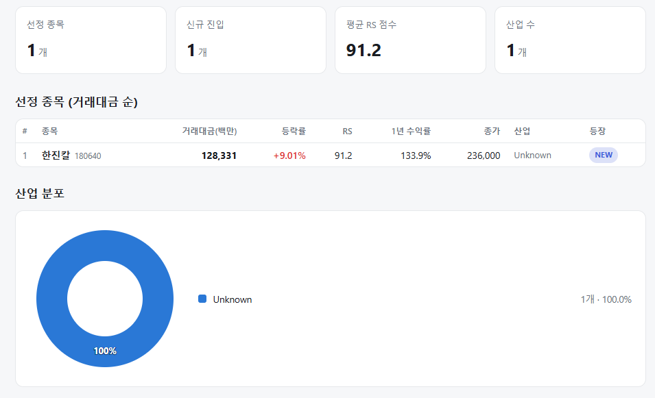
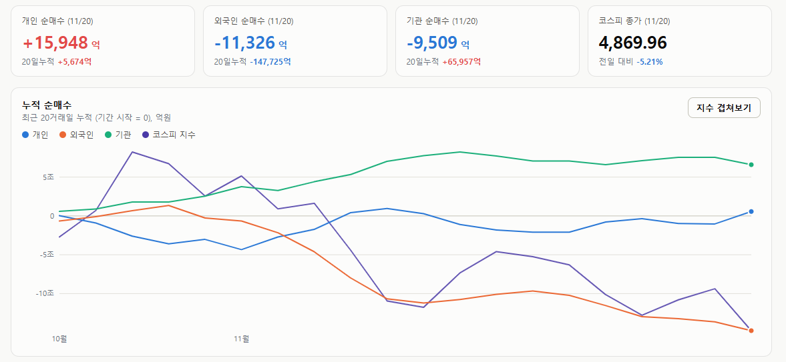
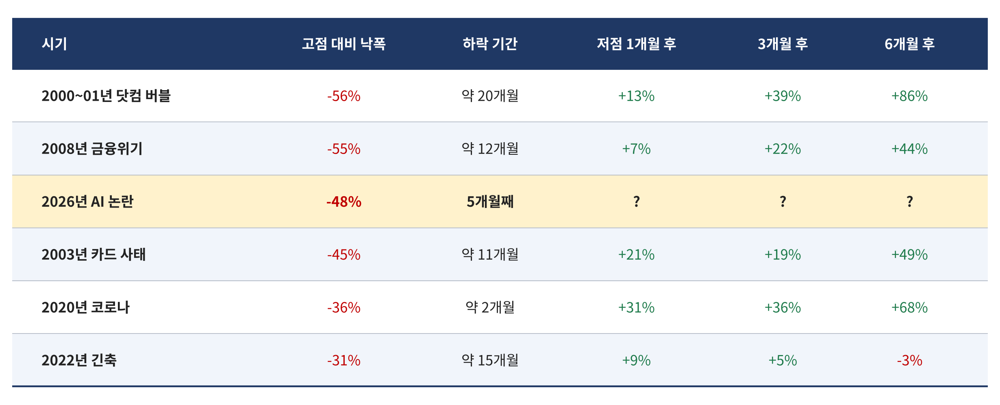

매일의 주도주 정리를 위해 기록합니다.
연속적으로 나온 종목들 또는 상승 후 조정받는 종목 위주로 리서치 해보시면 좋을 것 같습니다.

*오늘의 퀀트픽은 없습니다.
#주도섹터
항공·운송, 은행 및 유틸리티 (지수 급락 속 상대적 강세)
*주요 업종 및 종목: 운송(+1.73%), 항공사(+3.01%), 기타금융(+4.85%), 항공화물운송과물류(+0.17%), 전기유틸리티(-0.14%), 유틸리티(-0.23%), 은행(-0.31%), 게임엔터테인먼트(-0.48%), 글로벌텍스프리(+12.89%), 한진칼(+9.49%), 크래프톤(+2.23%), 한국전력(+1.19%), 메리츠금융지주(+0.56%), 신한지주(+0.47%).
* 분석: WICS 소분류 78개 가운데 상승 업종이 4개에 그친 급락장이어서, 오른 업종보다 낙폭이 제한된 업종이 상대적 강세로 분류됩니다. 항공사 업종은 한진칼(+9.49%)의 강세에 힘입어 +3.01%(거래대금 2,204억 원) 상승하며 운송 중분류(+1.73%)를 플러스권에 올려놓았습니다. 은행 업종은 -0.31%(거래대금 3,923억 원)로 낙폭이 작았고 신한지주(+0.47%)와 메리츠금융지주(+0.56%)는 소폭 상승 마감했습니다. 유틸리티 대분류(-0.23%)는 한국전력(+1.19%)이 버티면서 10개 대분류 중 가장 덜 하락했습니다.
#조정섹터
IT 하드웨어·반도체, 통신서비스 및 전력기기·기계
주요 업종 및 종목: IT(-7.19%), 기술하드웨어와장비(-10.24%), 전자장비와기기(-11.10%), 무선통신서비스(-9.76%), 전기장비(-7.57%), 반도체와반도체장비(-7.07%), 기계(-6.76%), 에너지(-5.94%), SK텔레콤(-12.84%), 삼성전기(-12.66%), LS ELECTRIC(-9.77%), SK스퀘어(-8.39%), 두산에너빌리티(-7.42%), 삼성전자(-7.16%), SK하이닉스(-6.26%).
* 분석: IT 대분류가 -7.19%(거래대금 10조 6,529억 원) 하락하며 지수 급락을 주도했습니다. 반도체와반도체장비 업종은 -7.07%(거래대금 8조 2,614억 원)로 삼성전자(-7.16%), SK하이닉스(-6.26%), SK스퀘어(-8.39%)가 동반 급락했고, 전자장비와기기 업종은 삼성전기(-12.66%)의 급락으로 -11.10%(거래대금 1조 1,380억 원)를 기록해 낙폭이 가장 컸습니다. 무선통신서비스(-9.76%)는 SK텔레콤(-12.84%)이 크게 밀렸고, 전기장비(-7.57%)와 기계(-6.76%)에서도 LS ELECTRIC(-9.77%), 두산에너빌리티(-7.42%) 등 대형주 중심으로 매물이 출회되었습니다.
#수급동향

코스피 지수는 전 거래일 대비 -5.21% 하락한 4,869.96으로 마감하며 5,000선과 4,900선을 모두 하회했습니다. 코스닥 지수 역시 -5.71% 하락한 645.68을 기록하며 650선 아래로 내려왔습니다.
유가증권시장에서 외국인 투자자는 1조 1,330억 원(누적 수급 집계 기준 -1조 1,326억 원, 20일 누적 -14조 7,725억 원)을 순매도하며 매도 규모를 확대했습니다. 기관 투자자 또한 9,508억 원(집계 기준 -9,509억 원, 20일 누적 +6조 5,957억 원)을 순매도하며 동반 매도 우위로 전환했습니다. 개인 투자자가 1조 5,951억 원(집계 기준 +1조 5,948억 원, 20일 누적 +5,674억 원)을 순매수하며 대응했으나 지수를 방어하기에는 역부족이었습니다.
글로벌 증시 약세 연동 및 시장 전반의 하방 압력: 간밤 미국 증시에서 나스닥(-2.25%, 23,879.20)과 S&P500(-2.02%, 7,175.83)이 동반 하락하고 필라델피아 반도체 지수(9,419.72) 역시 약세를 보이면서 대외 투자 심리가 위축되었습니다. 국내 코스피 시장에서는 상승 종목이 89개에 그친 반면 하락 종목은 808개(보합 16개)에 달해 전 업종에 걸친 매도 우위 흐름이 나타났습니다.
금융위기에 다가선 낙폭 — 코스피 -48%가 말해주는 것과 말해주지 않는 것
어제 앤트로픽은 공모가보다 17% 높은 97.17달러에 첫날을 마쳤습니다. 흥행이었습니다. 그런데 같은 날 S&P500은 -2.02%, 나스닥은 -2.25% 내렸고, 오늘 코스피는 매도 사이드카가 걸리며 오후 2시 20분 기준 4,844(-5.71%)까지 밀렸습니다.
6월 22일 고점 9,114에서 다섯 달 만에 약 -47~48%입니다. 2000년 이후 주요 조정장 가운데 세 번째로 큰 낙폭입니다.
① 낙폭의 순위 — 그리고 속도

1위는 닷컴 버블 붕괴(-56%), 2위는 금융위기(-55%)이고, 이번 조정은 2003년 카드 사태(-45%)와 2020년 코로나(-36%)를 이미 넘어섰습니다.
낙폭만큼 눈에 띄는 것은 속도입니다. 닷컴 버블은 약 20개월, 금융위기는 12개월, 카드 사태는 11개월에 걸쳐 내렸습니다. 이번에는 5개월입니다. 코로나(2개월) 다음으로 빠릅니다. 대형 위기급 조정을 이례적으로 빠르게 맞았습니다.
② 저점 뒤에는 빠르게 올랐다
저점 이후 지수는 빠르게 복원됐습니다. 다섯 번의 평균은 1개월 뒤 +16%, 3개월 뒤 +24%, 6개월 뒤 +49%입니다. 2022년을 빼면 6개월 뒤 평균은 +62%입니다.
다만 수익이 복원되는 것과는 다릅니다. -48% 내린 지수가 고점으로 돌아가려면 +92%가 필요합니다. 저점에서 50% 올라도 고점의 78% 수준입니다.
③ 표가 말해주지 않는 세 가지
첫째, 이 반등률은 '저점에서 산 사람'의 숫자입니다. 저점은 지나고 나서야 알 수 있습니다. 그래서 질문을 바꿔 봤습니다. 과거 두 번의 큰 조정에서 지금과 같은 -48% 지점에 샀다면 어땠을까.
두 번 모두 결과는 플러스였지만, 그 전에 -13~15%를 더 견뎌야 했습니다. 그리고 견뎌야 하는 시간은 하루일 수도, 열한 달일 수도 있었습니다. 지금 지수에 대입하면 추가 -13~15%는 4,100~4,200선입니다. 공교롭게도 작년 말 종가(4,214)와 같은 자리입니다. 금융위기급 낙폭이 나온다면 올해 오른 것을 모두 반납하는 수준이라는 뜻입니다.
둘째, 반등의 크기를 가른 것은 통화정책이었습니다. 반등이 컸던 네 번(닷컴, 금융위기, 카드 사태, 코로나)은 모두 저점 전후로 중앙은행이 금리를 내리고 있었습니다. 반등이 가장 약했던 2022년(6개월 뒤 -3%)만 금리를 올리는 중이었습니다. 지금은 연준이 올리는 쪽이고, 12월 0.5%p 인상론까지 나와 있습니다. 평균 +49%를 그대로 기대하기 어려운 이유입니다.
셋째, 지수와 종목은 다릅니다. 반대로 이전 주도주가 다음 상승장에서도 주도주였던 경우는 드뭅니다. 닷컴 이후에는 조선·철강이, 금융위기 이후에는 자동차·화학이 올랐습니다. 이번에 반도체가 다시 주도할지는 엔비디아의 구매 약정 같은 계약이 실제 실적으로 찍히는지에 달려 있습니다.
④ 이번은 무엇이 다른가
과거 큰 조정은 이익이 무너지는 과정이었습니다. 닷컴은 버블 붕괴, 금융위기는 신용 경색이었습니다. 이번에는 지수가 절반 가까이 내리는 동안 이익 추정치가 거의 내려오지 않았습니다. 그래서 선행 PER 3배대, 선행 PBR 0.9배라는 숫자가 나옵니다. 시장이 묻는 것은 "이익이 얼마인가"가 아니라 "그 이익이 유지되는가"입니다.
출발점도 다릅니다. 코스피는 올해 6월까지 연초 대비 116% 올랐고, -48%를 맞은 지금도 연초 대비로는 약 15% 위에 있습니다. 금융위기 때처럼 여러 해의 상승을 지운 것이 아니라, 반년 동안 급하게 오른 부분을 급하게 되돌린 모양입니다. 낙폭의 숫자는 금융위기와 닮았지만 성격은 다릅니다.
수급은 과거와 닮았습니다. 외국인은 9~10월 두 달간 45조 원을 팔았고 이번 주에도 매도가 이어졌습니다. 그 물량을 받은 것은 개인입니다.
통계가 말해주는 것은 이 정도 낙폭 뒤에는 대체로 빠르고 큰 반등이 왔다는 것입니다. 통계가 말해주지 않는 것은, 오늘이 그 저점인지, 그리고 금리가 오르는 중에도 같은 크기의 반등이 오는지입니다.
그래서 용기를 한 번에 낼 필요는 없습니다. 과거 -48% 지점에서 산 사람은 결국 벌었지만 -13~15%를 더 견뎌야 했습니다. 견딜 수 있는 크기로 나눠서, 외국인 매도가 멈추는지와 12월 9일 FOMC를 확인하면서 분할 매수하는 것이 안전해 보입니다.
이번 한주 좋은 호재(엔비디아 어닝서프라이즈, 앤스로픽 상장 흥행 등)가 있었음에도 지수가 반등하지 못한부분이 아쉽네요. 중요 지지선이었던 코스피 5000이 무너진 만큼 향후 큰 변동성이 예상됩니다.
어려운 장의 연속인데 힘내시길 바라겠습니다!!